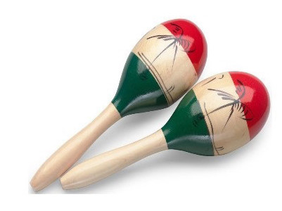
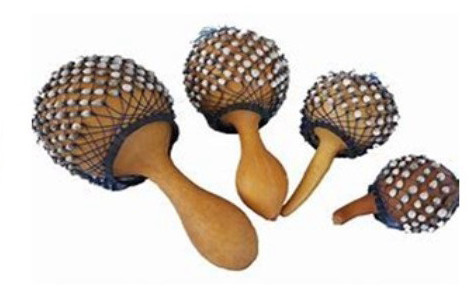

Ala za kutikisa
Hizi ni ala ambazo hutikiswa ili kutoa sauti. Sauti hizi hutokana na mgongano wa vitu mbalimbali vilivyotumika kutengeneza ala hizi. Mfano wa ala hizi ni manyanga, kayamba na njuga. Ala hizi huwekewa mbegu za nafaka kama vile mahindi au maharage, au mawe madogo madogo ndani yake. Pindi ala hizi zinapotikiswa, mbegu za nafaka au mawe yaliyomo ndani yake hutikisika na kutoa sauti. Kielelezo namba 4 kinaonesha baadhi ya ala za kutikisa.
Kayamba


Manyanga
24